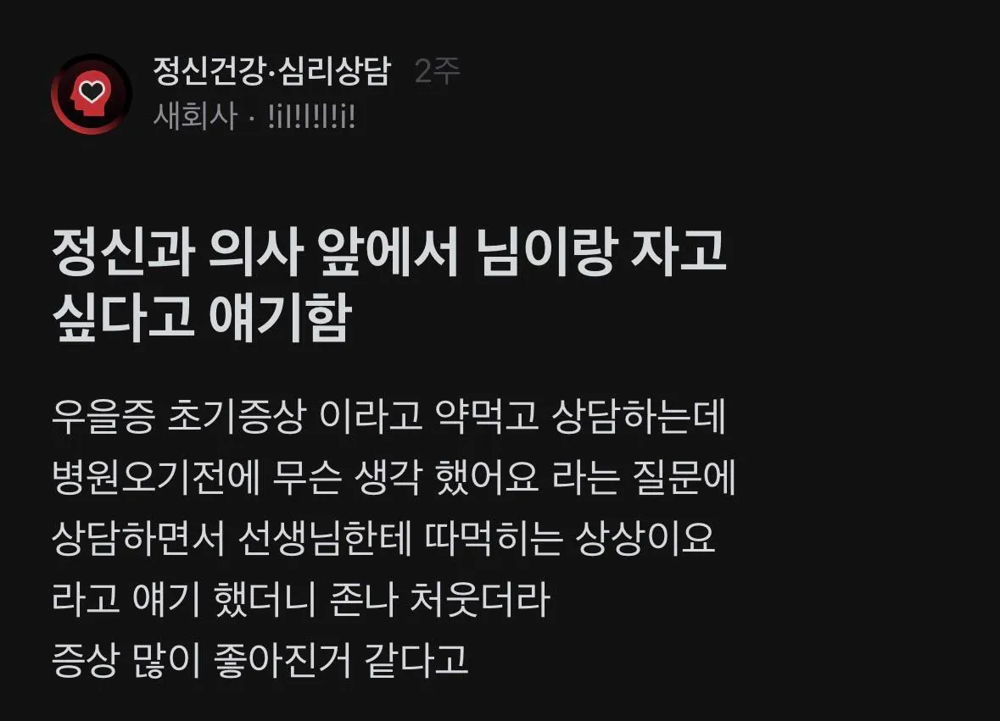

ㅋㅋㅋㅋㅋㅋㅋ

ㅋㅋㅋㅋㅋㅋㅋ
숟가락 들 수 있어요?

쟨 진짜로 말한 건데 "아이구 이젠 농담도 하고 많이 좋아지셨네요~" 이렇게 된 거 아니냐 ㅋㅋㅋㅋ
정신나간 미친년이 어딜 팍 씨 ㅋㅋ + 진짜로 야스 생각할 만큼 인생에 활기가 생긴게 다행이라 기분좋아서 복합일듯
후자인데도 환자가 나아지고 있어서 다행이다라고 먼저 생각이 들면 참의사네 ㅋㅋㅋㅋㅋㅋㅋㅋㅋ
그치 참의사신거지
차트: 우울증에서 정신분열로 변화
실제 정신과 진료
1. 않아서 30분~50분 대기.
2. XX씨 들어오세요~
3. (들어가며)안녕하세요~, 네~ 별일 없죠 요즘?, 네~ 똑같이드릴게요
4. 30초도 아니고 15초 컷
끗
정신과 진료랑 심리 상담사랑 다름, 저건 심리상담이고 한번 받을때마다 10만원정도 들어감, 좀 더 싼데도 있는데 이런건 무조건 유명한 상담사를 찾아가야 함
약먹고 우울증 치료 = 주치의가 대면하고 약처방 직접함.
심리상담은 정신과에 예약하고 심리삼당하는 전문가가 따로 있음. 설문지 작성하고 시작함
저건 심리상담이 아님
의사는 심리상담 거의 안함. 약처방만 하는데도 정신없어서.
뭐 진짜 특이한 케이스로 의사가 심리상담도 하는 경우도 있을 수겠지만 비효율적이라 그렇게 잘 안돌아감.
캡처 윗 상단 카테고리에 정신건강. 심리상담은 뭐임?
탈모약주는 의사랑
탈모시술받으라는 피부클리닉센터같은건가
똑같으면 악화된건 아니니 ok
아... 요즘... 이건 악화된거니 상담 길어지지
내가 간곳은 무조건 한명 한명씩 다 상담해주던데
오히려 환자들이 바빠가지고 주기적으로 타먹는 약만 달라고 하고 서둘서둘감
그니까 그게 심리상담이 아니라 그냥 진료 보는거야. 심리상담은 그거만 보는 전문가가 따로있음 시간 엄청 오래걸림
티비에서 나오는 뭐 어릴때 어쩌고 저쩌고 어떤게 무섭니 감정이 기복이 어떨때 잘 나타나고 이런식으로 해보시겠어요 저런식으로 해보시겠어요 하는 그게 정신과 상담이 아니라 심리상담치료임.
정신과 전문의 ㅈㄴ 바뻐.
동네 정신과 가도 사람 빼곡히 앉아있고 오래걸려도 2~3분 컷내고 다 옴.
그래서 동네 정신과도 신규 접수하려고 하면 예약하고 두세달 기다려야됨
그런 의사가 세상 좋게 노가리 까면서 심리상담을 어떻게함 바빠서 신규예약도 못쳐내고 있는데
정신과 상담은 그냥 약국이라보며 돼
잠 잘자요 못자요? 어떻게 힘들어요? 무슨일 때문에? 감정적이나 충동적으로 위험한 행동한적있어요?
이런식으로 등급매기듯이 스무고개 하다가 일단 이거 일주일 먹고 다시오세요
일주일 뒤에 가면 약 받아간거 뭐 부작용이나 이런 거 있었어요? 별차이 없어요? 약 좀 올릴게요 ~ 다음주오세요
이런식으로 돌아감. 약주고 > 괜찮았어요? > 약주고 > 다른증상없죠? > 좀찮죠? > 이제 진료볼때마다 15초 컷
이래서 정신과에서 신규예약이 힘든거야 기존 환자들은 1분에 4명씩 쳐내는데 처음가면 진료시간 엄청 오래 걸리니까
병원에서 가성비가 안나오잖아
물론 100% 모든 정신과가 이렇게는 아니지만 대부분 이럼
내가 가던 병원은 10분~20분 다 이렇게 해주긴함 1명마다
그건 의사따라 다름
매번 10분에서 15분이상 상담하는 의사도 있고
돈만 주면 매번 1시간이상 상담할 수도 있는거고
ㅇㅇ 의사마다 다른데 결국 사람 몰리면 1분 컷을 바뀌더라. 시간 여유가 있으면 더 섬세하게 보는 곳도 있겠지
나도 처음 약탔던 곳은 늘 5분~8분정도 진료봤음. 진료라기보다 그냥 노가리 까는 거 자기 동창회간 얘기를 나한테 왜하는지 모르겠지만 그것도 뭐 내 반응보는 진료의 일환이라 생각함
나중에 진료 빡세지니까 1분컷으로 바뀜.
어쨌든 내 말은 전문의는 심리치료 거의 안한다는 거임. 심리상담치료는 전문가가 따로 있어 시간 더 오래걸리고
10분동안 얘기하는 건 그냥 진료 보는 거고 심리상담치료는 20분 30분씩걸린다는 거 말하는거임
난 정신과는 아니고 심리상담 몇개월째 진행중인데 확실히 두개 다르긴 함
애초에 심리상담쪽에서 상담해보고 심각하다 싶으면 병원으로 넘기는 경우도 있다고 하니....
내가 정신과에서 일하는데 그런 경우가 많긴 한데 아닌데도 있음. 특히 어르신들 나이 많은 의사는 말 잘 받아줌. 업무과에서 일할때 한 기본이 한 환자가 10-20분이고 진찐 길때는(소수 있음) 1시간까지도 갔음.
대면시간이 길수록 청구 가 나 다 식으로 더 많이 넣을 수 있는데 그러면 의사가 자기가 써야할게 많으니 길게 상담해도 걍 대부분 가(10분미만)로 때려버리더라
페이닥터니 운영? 알빠노 마인드에다 의사가 갑이라..
어쨋든 말이 딴대로 새어갔는데 외래랑 입원 같이 하는 병원은 대개 길게 하고
외래만 하는데는 짧게 하는 경향이 있더라
빫게인하면
초반에 상담하거나 질문지같은거 작성 할 땐 그래도 시간 꽤 들이더라. 물론 처방받고 궤도에 진입하면 더 이상 말할거 없긴하고
이건 진짜 병원바이병원인듯 난 뒷사람은 언제 들어오나 걱정될정도로 안끝내더라 초진도 재진도
내가 다닌 정신과랑 다르네
처음 갔을뗀 20분 정도 같이 예기하고 상담하고
매번갈떄마다 10분씩 상당ㅁ했는데
존나ㅋㅋ 공감되네ㅋㅋ 이러고 약주고 끝
상담관련 종사자들에게 있어서는 금기중의 금기라고 함
뭐가?
내담자 또는 환자랑 사귀는거
뭐든 의욕이 있단거니 많이 좋아졌네
성별이 바꼈으면 ㄷㄷ
정신과 상담 하는 의사들 불문율이 절대 환자랑 연애하면 안된다는데
상담사랑 사이비 주교는 한끝차이거덩
당연한거임
진짜 우울하면 성욕도 안들고 그냥 하루종일 무기력한 상태로 몸살 걸린 몸상태마냥 반 시체처럼 있는데
섹스 생각날 정도면 양호해진거 맞네
선생님 아직도 웃겨요?
개꼴린대사
힘이 나긴 하나보네 섹스 생각도 나고ㅋㅋㅋㅋ